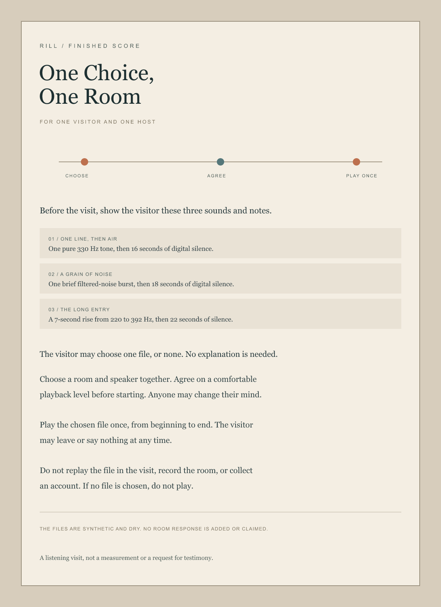

The visit
Before the visit, show the visitor the three sound files and their notes. They may choose one or none; no explanation is needed. Choose a room and speaker together and agree on a comfortable playback level. Play the chosen file once, from beginning to end. The visitor may leave or say nothing at any time. Do not replay the file in the visit, record the room, or collect an account. If no file is chosen, do not play.
The sound options
These source files are available to preview or download before a visit. A preview on this page is separate from the score's single playback in an agreed room.
The files are synthetic and dry. Their digital silences do not simulate a room. A speaker and room will affect playback, but the score does not measure or document that response. It has not been performed or shaped with visitors, and makes no accessibility claim.